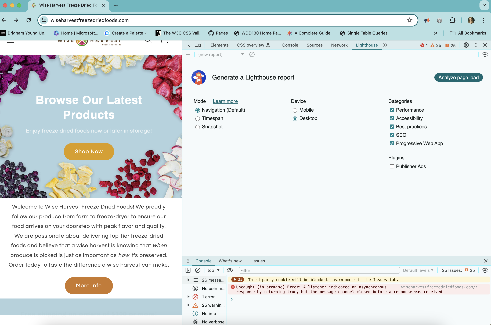
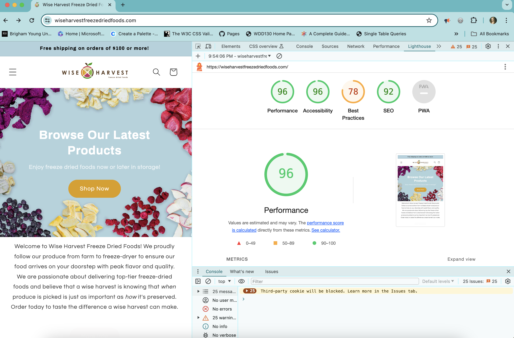
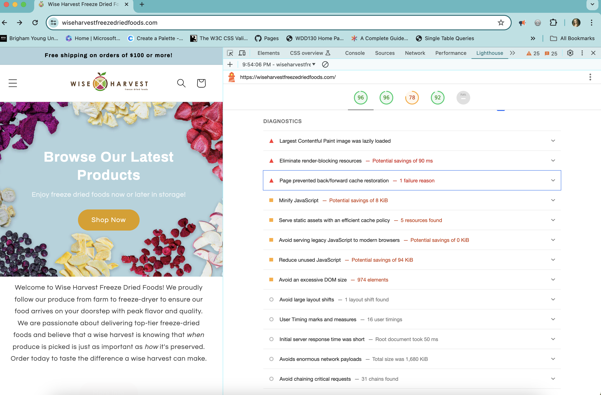
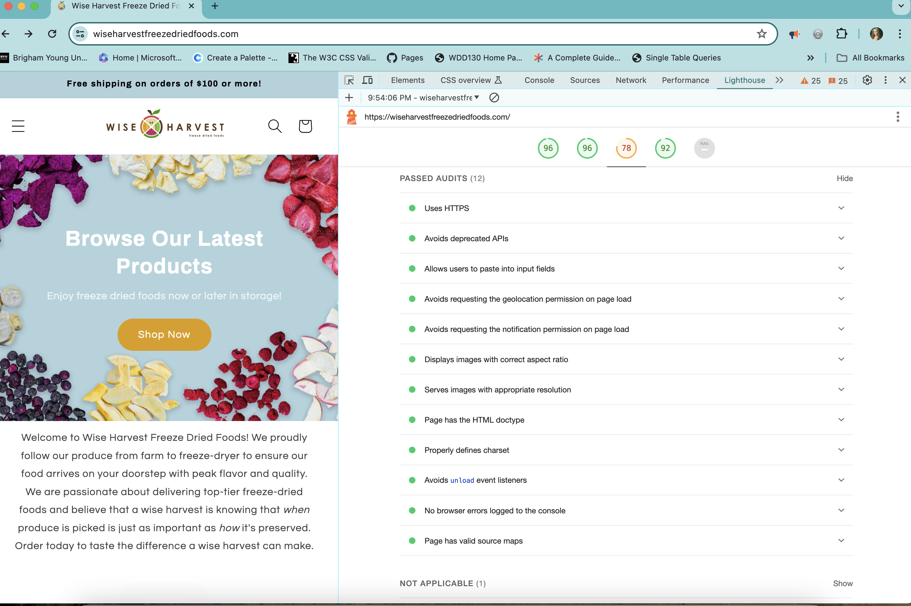

What is Lighthouse and how does it work?
Lighthouse is an automated tool for improving the quality of web pages. When you run it against your web page, it will audit for performance, accessibility, SEO, and more.
This image shows what it looks like when you first open Lighthouse. There are different options to choose from.
After running the audit, you can see how your website performs overall. This website is performing at 96%.
You can scroll down the report to see errors or things that could be improved that were found during the audit. They will be listed under the diagnostics section. This is an example below.
As you continue to scroll to the botttom of the audit report, you can see a list of all of the audits. You can click each one individually to get more information about that specific audit.
Using Lighthouse helps you to build a user-friendly website that runs efficiently.